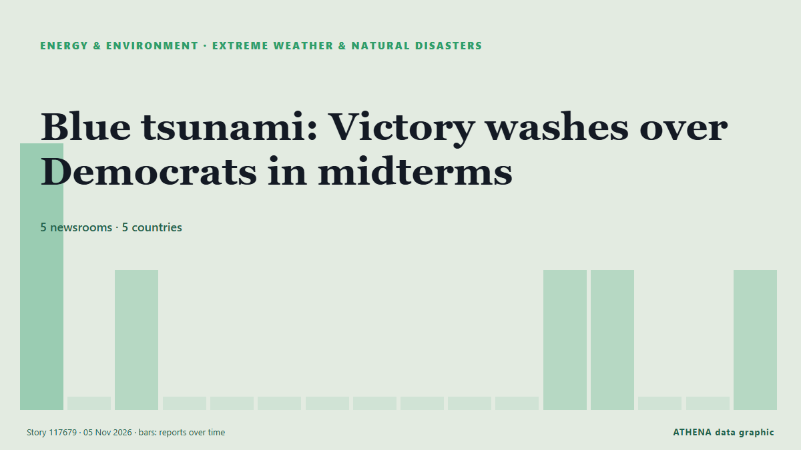

الطقس المتطرف والكوارث الطبيعية
برعايةبرعاية  Cybernetics and Artificial Intelligence Lab Welcome to the Cybernetics and Artificial Intelligence Laboratory, established at the Department of Business Administration of the National and Kapodistrian University of Athens. The lab is headed by Professor Dimitrios Thomakos. The lab aims to do research that can be published in top venues. Our research uses tools and methods of Artificial Intelligence, and lies in the following areas: - Forecasting - Decision making - Cyber security - Finance We are always looking forward to collaborating with exceptional students!
Cybernetics and Artificial Intelligence Lab Welcome to the Cybernetics and Artificial Intelligence Laboratory, established at the Department of Business Administration of the National and Kapodistrian University of Athens. The lab is headed by Professor Dimitrios Thomakos. The lab aims to do research that can be published in top venues. Our research uses tools and methods of Artificial Intelligence, and lies in the following areas: - Forecasting - Decision making - Cyber security - Finance We are always looking forward to collaborating with exceptional students!
| 23 أكتوبر | 0 |
|---|---|
| 24 أكتوبر | 0 |
| 25 أكتوبر | 0 |
| 26 أكتوبر | 0 |
| 27 أكتوبر | 0 |
| 28 أكتوبر | 0 |
| 29 أكتوبر | 1 |
| 30 أكتوبر | 1 |
| 31 أكتوبر | 0 |
| 1 نوفمبر | 4 |
| 2 نوفمبر | 4 |
| 3 نوفمبر | 0 |
| 4 نوفمبر | 3 |
| 5 نوفمبر | 2 |
تُعرض العناوين بالإنجليزية كما نُشرت.

Blue tsunami: Victory washes over Democrats in midterms
Even voters in areas that have repeatedly backed US President Donald Trump are no longer on board with the Republican Party, writes Jackie Fox. من RTÉ News
Cyclone Murasu kills 2, damages 312 houses in India's Andhra Pradesh
NEW DELHI, Nov 4, (Xinhua): At least two people were killed in the southern Indian state of Andhra Pradesh after severe cyclonic storm Murasu battered the coastal area, official... من Arab Times
Red Alerts for Severe Storms Issued in Greece and Romania for November 3
Severe thunderstorms, hail and strong winds are forecast across several regions, with Rhodes and the eastern Aegean facing particularly heavy rainfall. من to vima
Pompeii cupboard opens window onto life before Vesuvius erupted
A cupboard sealed for almost 2,000 years in Pompeii has yielded an intimate snapshot of one… من BusinessWorld
Heavy rainfall, uprooted trees, power outages: Cyclone Murasu crosses Andhra coast
The system is expected to bring wind speeds of 100-110 kmph, Indian Meteorological Department (IMD) director General Mrutyunjay Mohapatra said. من NDTV
Philippines raises Mayon volcano alert to level 3 after explosive eruption
A nearly six-minute eruption sent an ash column 3,000 metres into the sky, prompting authorities to order evacuations within six kilometres of the crater amid warnings of lava flows and dangerous… من TRT World
Storm Agneta Floods Rhodes, Sweeps Away 60 Cars and Damages Homes Across Greece
Storm Agneta has triggered major flooding on Rhodes, sweeping away at least 60 vehicles, inundating homes and businesses and prompting repeated 112 emergency alerts. من Greek City Times
Japan launches new national agency to deal with disasters
TOKYO, Nov 2, (AP): Japan on Monday launched a new national agency focused on disaster management with the goal of making the country better prepared if there's a megaquake along... من Arab Times
Earthquake recorded near Balykchy
An earthquake with an estimated intensity of around magnitude 3 was recorded near the city of Balykchy overnight, the Institute of Seismology of the National… من 24.kg (English)
Flash Flooding Triggers Evacuations in Southwest and Dire Warning for Colorado Spa Town
LOS ANGELES, Nov 2, (AP): Heavy rainfall produced flash flooding and mandatory evacuations in a swath of the Southwest on Sunday, including in a Colorado tourist town bracing for... من Arab Times